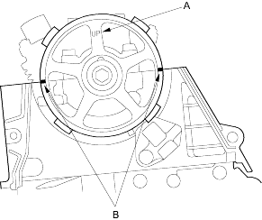
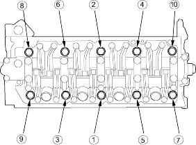

- Clean the camshaft pulley and set it to TDC.
- The ''UP'' mark (A) on the camshaft pulley should be at the top.
- Align the TDC marks (B) on the camshaft pulley with the top edge of the head.

- Install the cylinder head on the block.
- Apply engine oil to the bolt threads and under the bolt heads of all the cylinder head bolts.
- Tighten the cylinder head bolts sequentially in 3 steps.
1st step torque:20 Nm (2.0 kgf/m, 14 lbf/ft)
2nd step torque:49 Nm (5.0 kgf/m, 36 lbf/ft)
3rd step torque:67 Nm (6.8 kgf/m, 49 lbf/ft)
Use a beam-type torque wrench. When using a preset-type torque wrench, be sure to tighten slowly and do not overtighten. If a bolt makes any noise while you are torquing it, loosen the bolt and retighten it from the 1st step.
CYLINDER HEAD BOLTS TORQUE SEQUENCE:
